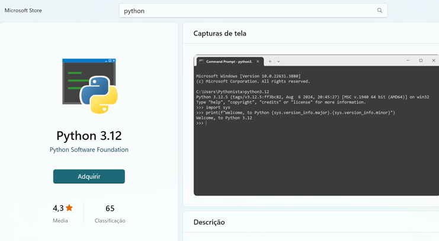
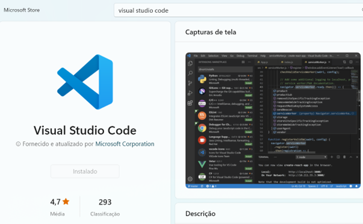
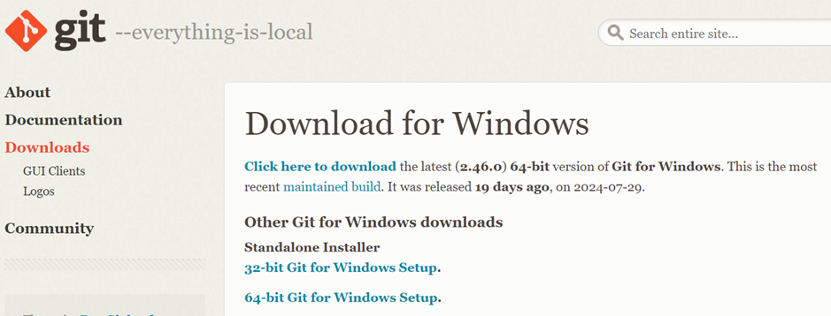
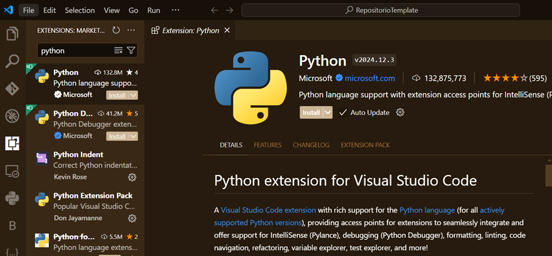
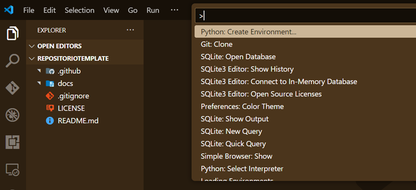
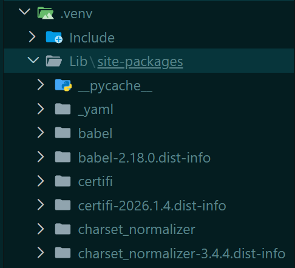
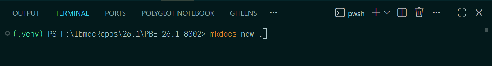
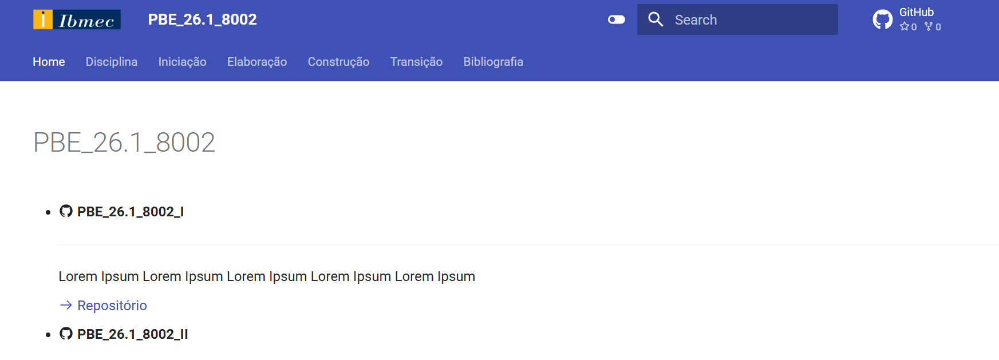
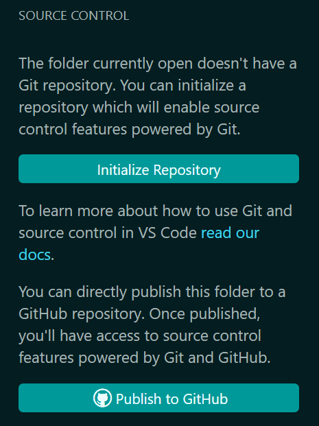

Ambiente de Desenvolvimento¶
Instalação softwares¶
Python¶
No Microsoft Store, instale o Python mais atualizado ou faça o download do site python.org.

Visual Studio Code¶
No Microsoft Store, instale ou baixe o Visual Studio Code mais atualizado.

Baixar e instalar o Git¶
Faça o download da versão mais recente do Git para Windows:

Caso precise adicionar o Git ao Path do Windows¶
No Prompt de Comando, digite:
Adicione o caminho de instalação do Git na variávelPATH.
Exemplo:
Configuração do Git¶
Adicione suas credenciais no Git:
Configurar o Visual Studio Code¶
Instalar a extensão do Python¶
Abra o Visual Studio Code e instale a extensão oficial do Python.

Ambiente Virtual¶
Agora vamos instalar o ambiente virtual, que permite isolar pastas (projetos) com versões específicas.
- Aperte
Ctrl + Shift + Pe selecione Python: Create Environment.... - Após a instalação, aparecerá a pasta
.venv.

{kind=link}
Site de Documentação¶
Abra um Terminal para prosseguirmos com a instalação do MkDocs, uma ferramenta que cria sites de documentação a partir de arquivos .md (Markdown).
{kind=link}
Instalação do MkDocs¶
Confirme que a instalação ocorreu com sucesso. Na pasta [.venv\Lib\site-packages], você deve observar o pacote mkdocs entre outros dependentes.

Criação do Projeto MkDocs¶
Execute o comando abaixo para criar os arquivos de configuração:
Esse comando cria dois arquivos principais:
- mkdocs.yml
- index.md

Executar o Servidor MkDocs¶
Para visualizar o site renderizado, execute:
Abra o navegador e clique no link disponibilizado:

Requirements.txt¶
A criação desse arquivo é importante para facilitar o controle de bibliotecas instaladas no ambiente virtual .venv. Execute o comando:
Isso evita que, em cada local de desenvolvimento, seja necessário instalar uma por uma das bibliotecas.
Repositório no GitHub¶
Para publicar o repositório no GitHub, clique em Publish to GitHub na aba esquerda do VSCode.
Desmarque a pasta .venv para que ela não seja enviada ao repositório e clique em OK.

Após a conclusão, será exibida uma mensagem de sucesso com o link para o repositório.
Instalação Remota (Casa, Trabalho, etc.)¶
Com esses passos realizados, já é possível replicar esse ambiente em outro local.
- Verifique se o Python, VSCode e Git estão instalados, de preferência na mesma versão.
- Clone o repositório:
- Aperte
Ctrl + Shift + Pe selecione Python: Create Environment, utilizando o arquivorequirements.txtpara instalar todas as bibliotecas necessárias.
Nota: Substitua os links das imagens pelos caminhos corretos na pasta
images/.